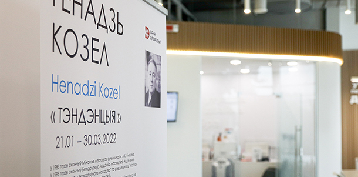
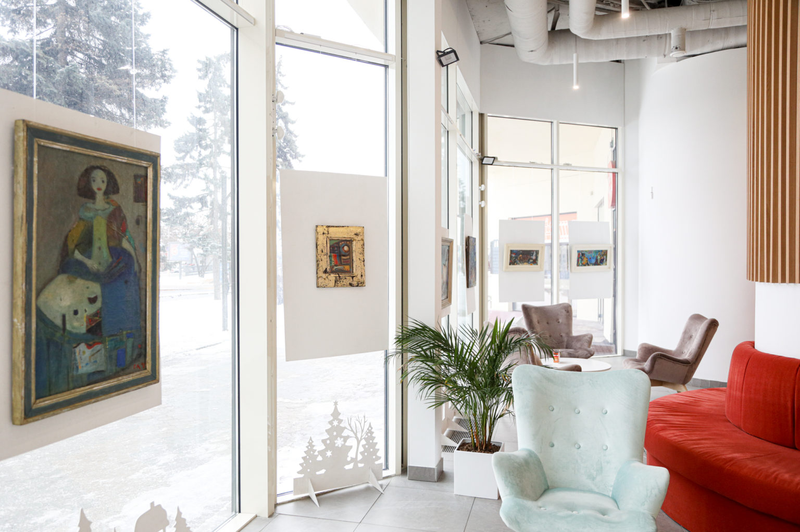
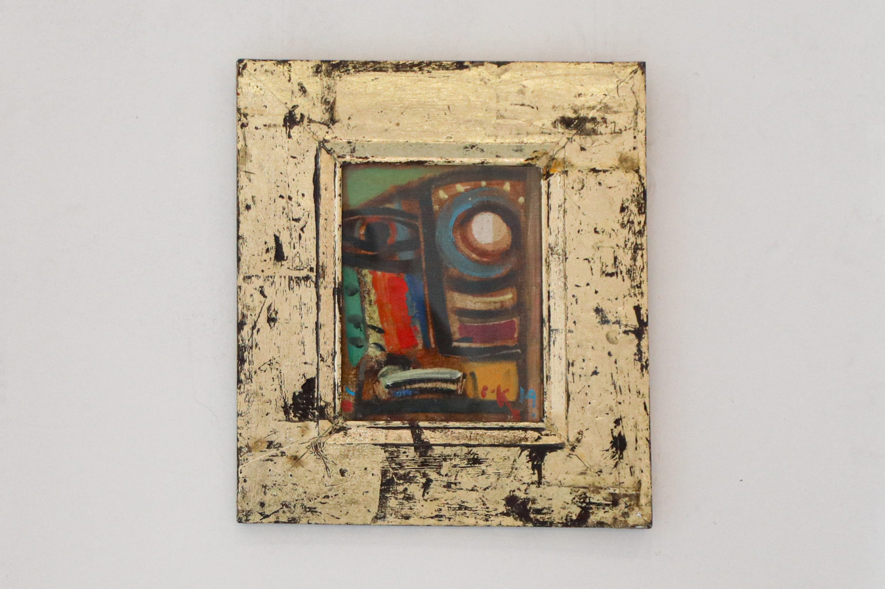

Выставка работ Геннадия Козела открыта для всех
Источник prvision.by , Дата: 12 Фев. 2022 Бесплатная арт-галерея в центре Минска выставила картины-символы художника Геннадия Козела. Работы белоруса вдохновлены творчеством Веласкеса, Гойи и Рембрандта. Находится экспозиция в отделении Банка Дабрабыт на проспекте Победителей, 3, причем полотна можно увидеть как внутри, так и снаружи – за остекленным фасадом.
В экспозицию вошли несколько десятков картин известного живописца. Среди них – портреты и образы-символы, которые предстоит разгадать посетителям. Как колорист Геннадий Козел смело играет цветами – от этого картины смотрятся эффектно и оставляют яркие впечатления. Многие полотна можно увидеть только на выставке.
Под выставку в Банке Дабрабыт выделили большую часть отделения и панорамный фасад. Причем сделали так, чтобы на каждой витрине было по две картины – по одной с внешней и внутренней стороны. Приобщаться к искусству можно и днем, и ночью. Внутри арт-галереи стоят мягкие стулья и диваны – можно пообщаться на фоне полотен.
«В цифровую эпоху много места для работы банка и не нужно, но мы хотим использовать пространство в центре Минска для того, чтобы увлечь людей, показать что-то новое, заставить задуматься и отвлечься от городской суеты. И с этой задачей работы Геннадия Козела справляются прекрасно. Ведь каждая картина – это загадка, которую не так просто и разгадать. И на этом мы не остановимся – впереди у арт-галереи много новых экспозиций», – рассказывают в Банке Дабрабыт.
Выставка открыта с понедельника по пятницу с 09:00 до 20:00 и в субботу с 10:00 до 18:00. Вход свободный, обслуживаться для этого в Банке Дабрабыт необязательно. Геннадий Козел пишет картины и занимается монументальным искусством. Его работы представлены в частных коллекциях Беларуси, России, США, Великобритании, Франции и Германии. Художник умело использует разные оттенки и не боится работать с черным цветом. Картины колориста содержат спрятанные символы.
Еще на эту тему19 ноября 2020
19 ноября в столицестартует фестиваль
искусства «Арт
-Минск-2020»
31 марта 2020
Изоляция. ВыставкаРомана Каминского
18 марта 2020
Спартак Арутюнян,живописец и скульптор
17 марта 2020
Персональная выставкаСергея Гриневича
21 февраля 2020
Выставка живописи АнныСиливончик «Много букв»
7 февраля 2020
Излом